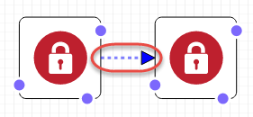

本文為英文版的機器翻譯版本，如內容有任何歧義或不一致之處，概以英文版為準。
畫布窗格
設計工具會在 canvas (畫布) 窗格中將您的範本資源以圖表顯示。您可以在此窗格中修改圖表的配置、新增或移除資源，以及新增或移除資源間的連線。例如，您可以從 Resource types (資源類型) 窗格，將 Auto Scaling 群組和啟動組態新增至 canvas (畫布) 窗格。若要連線這些相關資源，您只需要在他們之間拖曳連線即可。
設計工具如何建立資源模型？
當您將資源從 Resource types (資源類型) 窗格拖曳到 canvas (畫布窗格) 時，設計工具會將其作為容器或方形物件建模。
- 容器
-
容器資源為可調整大小的矩形，並可包含其他資源。例如，設計工具會將
AWS::EC2::VPC資源類型作為容器建模。您可以將資源 (例如子網路) 拖曳到 VPC 中。容器資源

- 方形物件
-
方形物件資源無法調整大小或包含其他資源。例如，設計工具會將
AWS::EC2::Instance資源類型作為方形物件建模。方形物件

連線資源
您可以連線資源，以建立相關資源間的關聯。例如，當您將網際網路閘道和 VPC 新增到 canvas (畫布) 窗格時，他們沒有任何關聯。若要將閘道連接到 VPC，您必須將他們連線。連線資源的方法取決於資源類型，以及設計工具為資源建模的方式。以下描述和圖表說明每一種方法。
- 將資源新增到容器
-
當您將有效的資源拖曳到容器內時，設計工具會自動建立資源和容器間的關聯。例如，VPC 是容器資源。您可以將子網路拖曳到 VPC，設計工具便會立即建立兩個資源間的關聯。

這些關聯會在您的範本中以
Ref內部函數表示，如以下範例所示：JSON
"PublicSubnet": { "Type": "AWS::EC2::Subnet", "Properties": { "VpcId": { "Ref": "VPC" }, "CidrBlock": "10.0.0.0/24" }YAML
PublicSubnet: Type: 'AWS::EC2::Subnet' Properties: VpcId: !Ref VPC CidrBlock: 10.0.0.0/24在某些情況下，將資源置放在容器內不會建立關聯。您必須在資源間拖曳連線 (請參閱下一個方法以取得在資源間拖曳連線的資訊)。若要查看設計工具是否已為資源建立關聯，請使用整合式 JSON 及 YAML 編輯器尋找從一個資源連到另一個資源的
Ref。例如，當您在子網路容器內新增 Auto Scaling 群組時，設計工具不會指定群組的VPCZoneIdentifier(子網路) 屬性。若要關聯這兩個資源，您必須從 Auto Scaling 群組拖曳連線至子網路。 - 拖曳資源之間的連線
-
每個方形及容器資源的邊緣都有一或多個點，表示您可以用來建立連線的資源。若要建立連線，請從點拖曳連線至對應的資源類型。例如，若要將網際網路閘道連接到 VPC，請從 VPC 閘道連接點拖曳一條線至 VPC 的任何一處。

這些關聯會在您的範本中以
Ref內部函數或獨立的資源類型表示。例如，當您將網際網路閘道連線到 VPC 時，設計工具會在您的範本中建立AWS::EC2::VPCGatewayAttachment資源類型以關聯它們。類似這些資源不會在 Resource types (資源類型) 窗格中列出。JSON
"VPCGatewayAttachment": { "Type": "AWS::EC2::VPCGatewayAttachment", "Properties": { "InternetGatewayId": { "Ref": "InternetGateway" }, "VpcId": { "Ref": "VPC" } }YAML
VPCGatewayAttachment: Type: 'AWS::EC2::VPCGatewayAttachment' Properties: InternetGatewayId: !Ref InternetGateway VpcId: !Ref VPC - 編寫資源之間連線的程式碼
-
在某些情況下，您必須編輯範本的 JSON 或 YAML 來建立連線，例如當您連線兩個安全群組時。當您必須編輯 JSON 或 YAML 來建立連線時，您可以建立硬式編碼連線 (虛線連線)。您無法在 canvas (畫布) 窗格中建立或編輯這些連線。
一般而言，當您在資源的屬性中內嵌參考 (
Ref) 時，您會建立硬式編碼連線。例如，您可以定義兩個安全群組之間的連線，其中一個安全群組具有允許來自另一個安全群組之流量的內嵌輸入規則。以下WebServerSecurityGroup資源具有參考PublicLoadBalancerSecurityGroup資源的輸入規則。JSON
"WebServerSecurityGroup": { "Type": "AWS::EC2::SecurityGroup", "Properties": { "VpcId": { "Ref": "VPC" }, "GroupDescription": "Allow access from HTTP and SSH traffic", "SecurityGroupIngress": [ { "IpProtocol": "tcp", "FromPort": 80, "ToPort": 80, "CidrIp": "0.0.0.0/0" }, { "IpProtocol": "tcp", "FromPort": 22, "ToPort": 22, "CidrIp": { "Ref": "SSHLocation" } } ] } ...YAML
WebServerSecurityGroup: Type: 'AWS::EC2::SecurityGroup' Properties: VpcId: !Ref VPC GroupDescription: Allow access from HTTP and SSH traffic SecurityGroupIngress: - IpProtocol: tcp FromPort: 80 ToPort: 80 CidrIp: 0.0.0.0/0 - IpProtocol: tcp FromPort: 22 ToPort: 22 CidrIp: !Ref SSHLocation
使用資源選單存取常見資源動作
Resource (資源) 選單可讓您輕鬆存取常見的資源動作：編輯資源屬性、複製資源、刪除資源，或是檢視資源的文件。若要查看 Resource (資源) 選單，請在 canvas (畫布) 窗格中以滑鼠右鍵按一下資源。文件連結會前往範本參考，說明該資源的屬性和語法。
資源選單

定義明確依存性
若要指定 AWS CloudFormation 建立和刪除資源的順序，您可以建立明確依存性。明確依存性在覆寫平行資源建立和刪除時很有用。AWS CloudFormation 會自動判斷範本中的哪些資源可進行平行處理，哪些則不行。當您在相同的範本中指定參考另一個來源屬性的屬性 (使用 Ref 內部函數) 或是從另一個資源取得屬性時 (使用 Fn::GetAtt 內部函數)，這表示依存性和 AWS CloudFormation 是以正確的順序建置它們。
但是，在某些情況下，您必須明確定義依存性。例如，直到閘道連接到 VPC 前，路由規則都無法使用網際網路閘道。一般而言，因其隱含依存性，AWS CloudFormation 會在建立網際網路閘道之後立即建立路由規則。但是，AWS CloudFormation 可能會在網際網路閘道連接到 VPC 前就建立規則，因此造成錯誤。因此，您必須明確定義閘道 – VPC 連接的依存性。
若要建立明確依存性，請從 DependsOn (*) 在路由上的點拖曳連線至閘道 – VPC 連接。

如需您可能需要建立明確依存性之時機的詳細資訊，請參閱 DependsOn 屬性。
JSON
在 JSON 中，這些明確依存性會以資源上的 DependsOn 屬性表示，如以下範例所示：
"PublicRoute": { "Type": "AWS::EC2::Route", "DependsOn": "VPCGatewayAttachment", "Properties": { "DestinationCidrBlock": "0.0.0.0/0", "RouteTableId": { "Ref": "PublicRouteTable" }, "GatewayId": { "Ref": "InternetGateway" } }
YAML
在 YAML 中，這些明確依存性會以資源上的 DependsOn 屬性表示，如以下範例所示：
PublicRoute: Type: 'AWS::EC2::Route' DependsOn: - VPCGatewayAttachment Properties: DestinationCidrBlock: 0.0.0.0/0 RouteTableId: !Ref PublicRouteTable GatewayId: !Ref InternetGateway